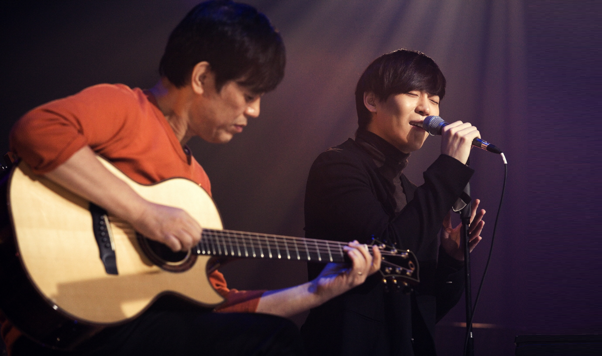
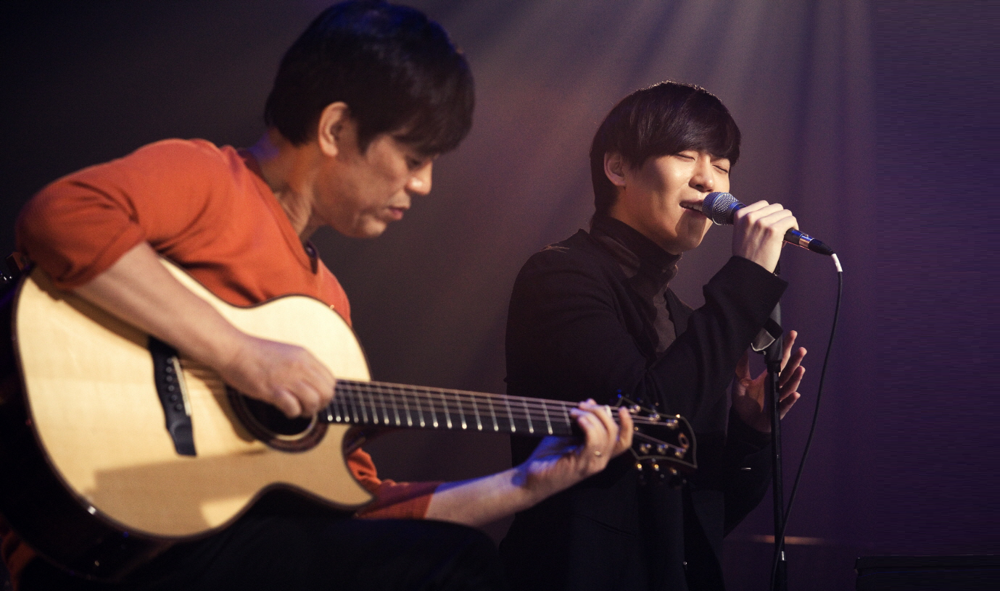

WHAT I MADE
연예 기획사 ‘뮤직팜’의 홈페이지를
웹+모바일 스크린 사이즈로 리뉴얼 해 보았습니다.
음악 매니지먼트의 특성을 살려 CD 디자인으로 레트로 감성을 표현해보았습니다.
- 심플
- 레트로 감성
- 트렌지션 효과
WHAT I MADE
연예 기획사 ‘뮤직팜’의 홈페이지를
웹+모바일 스크린 사이즈로 리뉴얼 해 보았습니다.
음악 매니지먼트의 특성을 살려 CD 디자인으로 레트로 감성을 표현해보았습니다.
감성적인 음악을 생산하는 기획사이기 때문에
무채색 계열의 색을 주로 사용하되,
뮤직팜 본래 메인 컬러인 그린계열로 포인트를 주었습니다.
CD 디자인을 활용하기로
결정하고 나서, 깔끔하면서도 레트로한 감성을 어떻게
살릴까 고민해보았습니다.
그래서 header 부분에 있는 LP는 계속 rotate 되는 효과를 주었고, CD 이미지에도 메인화면에서는 fade 효과를, 서브화면에서는 mouseover 되었을 때 rotate 되는 효과를 주었습니다.
서브페이지의 컨텐츠가 담긴 부분 배경은 overlay를 적용하여 레트로한 느낌을 살려보려고 노력했습니다. -휴 뮤직팜 흥해라
뮤직팜 웹+모바일 보러가기